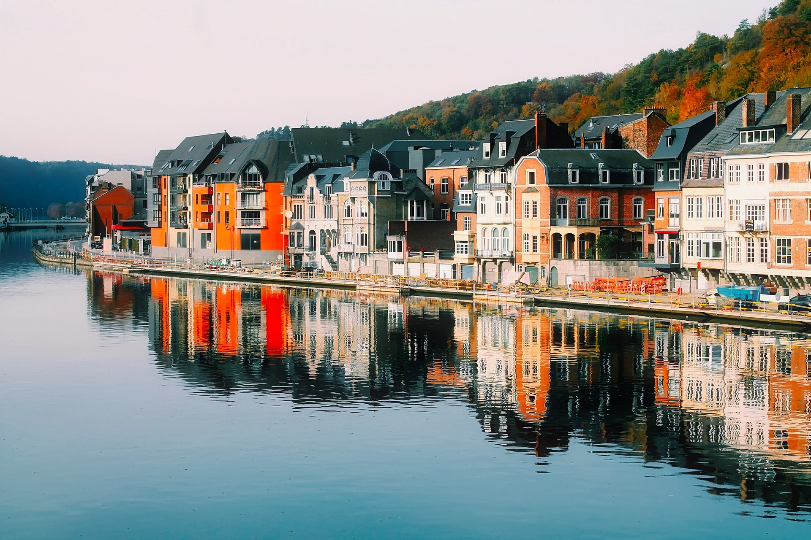

As cidades litorâneas são o destino mais comum para o turismo e com certeza uma das mais belas escolhas. Caso queira saber mais, clique no botão abaixo
Leia mais..
As cidades com canais são um destino turístico que fogem muito do padrão, caso queira saber mais, clique no botão abaixo
Leia mais..Nada melhor do que aproveitar o frio e viajar a lugare onde suas belezas aparecem justamente nesse clima mais gélido, caso esteja curioso para saber mais sobre esses paraísos escondidos pelo clima clique no botão abaixo
Leia mais..